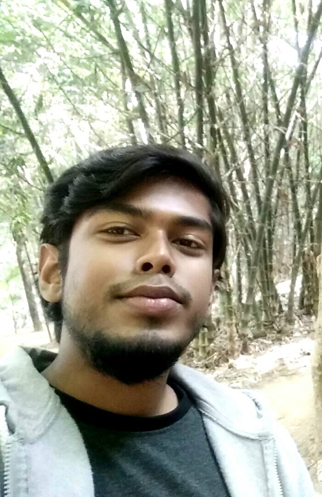

Resume
of
RAFAYAAT RUSHAFI ALAM
PRESENT ADDRESS: Block-D, Road-6, House- 204, Flat- 3A, Bashundhara R/A, Dhaka.
CELL:+8801984597802
EMAIL:rrafayaat@gmail.com
Career Objective:
To be an astute learner and the best performer in your organization.So that I can build an innovative career in your esteemed organization by using my skills and other significant talents
Position Sought:
Software Engineer at Google.
Educational Background :
- B.Sc. in CSE
CGPA 3.33 out of 4.0(upto 108 credits)
Expected Graduating Year: spring 2018
American International University-Bangladesh(AIUB)
Computer Expertise:
Training:
- Completed a certificate program for an intensive course of Spoken English conducted by Executives Care’s in 2012.
Participation:
- Participated as both as a solo performer and Coras team in each and every college programs.
- Participated in Theatre as an actor for AIUB DRAMA CLUB(ADC)
Language Proficiency:
Excillent written and oral competence between both in English and Bengali.
Interpersonal Skills:
- Good knowledge of Microsoft Office Suite as (MS–Word, Excel and Power point)
- Internet browsing and E-mail correspondence
Personal Details:
- Father name: Md Alamgir
- Mother name: Saleha Akhter
- Nationality: Bangladeshi
- Marital status: Single
- Religion: Islam
- DOB: 7th December, 1996
References:
| Dr Dip Nandi
|
| Head of CSE, |
| American International University-Bangladesh |
| (AIUB) |
I certify that all information stated in this resume is true and complete to the best of my knowledge. I authorize the agency concerned to verify the information provided in this C.V.
Rafayaat Rushafi Alam
Date: 30-Fabruary-2016